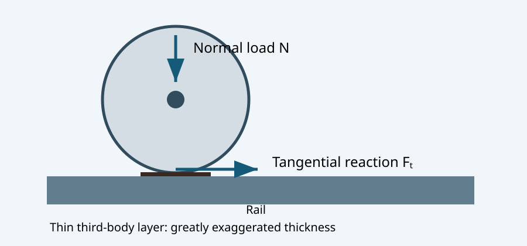
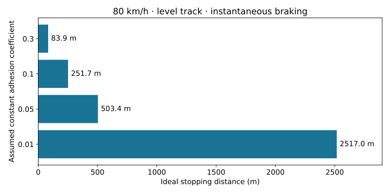
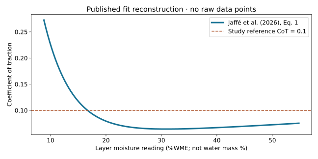

Leaves on rails: contact mechanics, chemistry and the limits of friction
MIE 446 · Aerospace Structures · UMass Amherst
Research-based engineering enrichment · 7 November 2026
Illustrated reading · Course home
1. The engineering question
How can a thin layer of crushed leaves disable a train whose engine and brakes are working? The useful answer is a force-path problem: the motor supplies torque, but the wheel–rail interface must transmit the corresponding tangential force. A contaminated interface can support the normal load while transmitting very little tangential load. This distinction connects contact mechanics with landing gear, friction joints and structural load paths.
This original teaching note critically develops the supplied Zoomit feature [1] using the full texts of Watson et al. (2020) [2] and Jaffé et al. (2026) [3]. It does not reproduce the feature. Operational claims are checked against primary railway sources [5–7].
Learning goals: derive traction and stopping limits; distinguish mean and maximum contact pressure; explain the experimental evidence for tannins and moisture; distinguish measured correlations from established mechanisms; and transfer these ideas to aerospace structures without equating steel–steel and tire–runway contacts.
2. Normal load survives while tangential capacity collapses
For one contact, let \(N\) be normal force and \(F_t\) tangential force. Define the measured coefficient of traction as \(\mathrm{CoT}=F_t/N\) at the instrument’s particular speed, slip and contact condition. Its measured value is not automatically the peak adhesion available to a full train.
An elementary limiting-force model is
\[|F_t|\leq\mu N,\qquad |T|\leq\mu NR. \tag{1}\]
Here \(R\) is wheel radius and \(T\) is wheel torque. A real rolling contact develops force through creepage, with partial slip and a traction curve. Equation (1) is a useful envelope, not a full rolling-contact constitutive law. Low adhesion is not zero friction: a sliding wheel can still slow the train, but much less effectively.

Figure 1. Original schematic, not to scale. A thin third-body layer changes tangential transmission without removing the normal reaction.
A nominal 1–2 cm² patch refers to an individual wheel contact, not the entire train. The train has many wheels, and their loads need not be equal. For an illustrative, not measured, wheel load of 70 kN and contact area 150 mm²,
\[\bar p=N/A=467\ \mathrm{MPa}. \tag{2}\]
For an ideal Hertz elliptical pressure distribution with semiaxes \(a,b\),
\[p(x,y)=p_0\sqrt{1-x^2/a^2-y^2/b^2},\quad A=\pi ab,\quad p_0=\frac{3N}{2\pi ab}=1.5\bar p.\tag{3}\]
The example gives \(p_0=700\) MPa. Area is an input here, not a Hertz prediction: predicting it requires elastic properties and both principal relative curvatures. Rail profile, wear, plasticity, roughness and contamination can invalidate the ideal elastic model. The 2026 study’s portable instruments used nominal contact pressures of 660 and 700 MPa; its layer-generation rig applied 70 kN [3, p.191]. These are different devices, not interchangeable loading conditions.
Small area explains high local stress and the importance of surface condition. It does not by itself explain a small friction force: in the elementary Coulomb model the force limit depends on \(N\) and \(\mu\), with no explicit apparent-area term.
3. Why extra train mass does not guarantee grip
On level track, assuming every wheel can brake at the same constant adhesion limit and neglecting drag, rotational inertia and brake-system delays,
\[m\dot v=-\mu mg,\quad a_b=\mu g,\quad t_s=\frac{v_0}{\mu g},\quad s_s=\frac{v_0^2}{2\mu g}.\tag{4}\]
Mass cancels under these assumptions. At 80 km/h (\(v_0=22.222\) m/s), the following are idealized calculations, not measured train stopping distances:
| Assumed constant \(\mu\) | Deceleration (m/s²) | Stop time (s) | Stop distance (m) |
|---|---|---|---|
| 0.30 | 2.943 | 7.55 | 83.9 |
| 0.10 | 0.981 | 22.65 | 251.7 |
| 0.05 | 0.4905 | 45.31 | 503.4 |
| 0.01 | 0.0981 | 226.53 | 2517.0 |

Figure 2. Equation (4), level track, instantaneous braking and constant adhesion. This is not an operational braking curve.
A delay \(t_d\) adds approximately \(v_0t_d\) before deceleration begins. On a downhill gradient \(\theta\), this ideal braking magnitude becomes \(g(\mu\cos\theta-\sin\theta)\); when nonpositive, adhesion-limited wheel braking alone cannot hold or decelerate the train in this model.
For uphill traction, the available normal load belongs to driven wheels, whereas gravity acts on the entire consist. If their supported mass fraction is \(f_d\) and resistance other than gravity is \(F_r\),
\[F_{\mathrm{drive,max}}=\mu f_dmg\cos\theta,\qquad \tan\theta\leq\mu f_d-\frac{F_r}{mg\cos\theta}.\tag{5}\]
At \(\mu=0.01\), even \(f_d=1\) only gives a 1% ideal gradient ceiling before additional resistance; a locomotive hauling unpowered wagons has a smaller \(f_d\). Adding weight over powered axles can help, so the mass-cancellation argument must not be generalized to every traction scenario.
4. What the 2020 chemistry study actually did
Watson et al. [2] studied aqueous extracts of naturally fallen brown sycamore leaves. Leaves were milled, extracted at 1 g per 50 mL water for 60 hours, then filtered to 0.49 µm. The filtered solution had pH 4.8. Fresh extracts were tested on the day of preparation because they degraded during storage [2, §§4a–b].
The causal intervention was removal of polyphenols, including tannins, using PVPP. The authors compared untreated extract, treated extract, water and, in selected tests, tannic acid or tannic-acid replacement. Adding ferric chloride to extract produced a black precipitate. Spectroscopic and elemental evidence (FTIR, XPS, CHNS, ICP-MS and XRF) supported identification as an iron–tannin complex, termed iron tannate. Removal of polyphenols reduced precipitate yield by an average 82% (three repeats, reported \(p=0.00038\)) [2, §2b].
The dry precipitate had reported nanoindentation hardness \(352\pm2\) MPa and modulus \(6.90\pm0.29\) GPa. These are properties of the prepared, dried material; they are not the effective stiffness or strength of a wet in-service rail film.
Three friction configurations provided an important test of relevance:
| Configuration | Key reported settings | What it establishes |
|---|---|---|
| Reciprocating ball on flat | 10 N; 1.55 GPa Hertz pressure; 12 repeats/condition | Removing tannins increased friction in pure sliding. |
| Mini traction, ball on ring | 44 N; 1 GPa; 50% slide–roll ratio; four repeats | Tannin-containing solutions had lower friction than water; replacement tests strengthened attribution. |
| Twin-disc rolling/sliding | 2720 N; 0.9 GPa; 3% slide–roll ratio; six repeats | More representative kinematics reproduced very low friction and the tannin-removal effect. |
In twin-disc tests, the treated extract was not significantly different from water (reported \(p=0.92\) for mean and 0.54 for minimum friction). This is not proof of exact equality. Untreated extract differed from water/treated extract; the study reports \(p=0.015\) for mean and 0.032 for minimum [2, §2d].
The experimental design controlled order and sample effects, randomized tests and blinded operators until application. Twin-disc tests reused specimens, with possible cross-contamination explicitly acknowledged. These details matter more than merely detecting a chemical in a field sample.
Evidence versus proposed mechanism. Tannins can cause low friction, and cellulose is not necessary for that experimental result. The authors proposed a cross-linked hydrogel that expels water under compression and produces dynamic lubrication. They explicitly left confirmation of the detailed lubrication mechanism to future work and did not claim to exclude all other mechanisms in the open railway environment [2, §3].
5. What the 2026 moisture study adds
Jaffé, Tomlinson and Lewis [3] combined controlled climate-chamber testing, laboratory-generated layers and natural layers on narrow-gauge railways. Generated layers used R260 rail, approximately 1 mm ground leaf particles, water, a full-size wheel, 70 kN normal load and 3% slip. Generation-rig CoT was 0.038 for contaminated rail versus 0.308 for the control [3, p.191]. Later portable-instrument readings must not be treated as the same measurement.
The OnTrak instrument was used in the climate chamber; a Rivelin Rail instrument was used in later uncontrolled and field work. Both operated at 5% creep, but their loads, speeds and angles of attack differed. The authors discuss instrument-dependent traction results and notably did not measure CoT below 0.1 on contaminated rails in the chamber [3, pp.198–199].
Layer moisture was held within a high range of roughly 30–45% while air temperature and humidity varied. The contaminated-rail CoT showed little relation to those environmental variables (\(R^2=0.0981\) and 0.011). This supports moisture as the more direct descriptor within the tested conditions. It does not prove that temperature has no independent effect for all temperatures, contaminants, speeds or instruments.
Essential unit warning: the Testo 606-1 output is %WME (wood moisture equivalent), an instrument response referenced to wood in moisture equilibrium. It is not a direct gravimetric water fraction of the leaf film. Its reading range was 8.8–54.8%WME; out-of-range readings were censored at the limits. The reported approximately 20–25%WME transition is therefore an empirical instrument- and dataset-specific indicator, not a universal water-content safety threshold.
The fitted relationship for the created-layer dataset was [3, Eq.1 and Appendix II]
\[\mathrm{CoT}(M)=1.306e^{-0.2017M}+0.04757e^{0.008406M},\tag{6}\]
with \(R^2=0.8195\), RMSE 0.035 and 42 degrees of freedom. \(M\) is the numerical %WME reading (e.g. 25, not 0.25). The fit is descriptive, not a constitutive law.

Figure 3. Reconstruction of published Eq.1 over the instrument range; no raw data digitized or invented. The dashed 0.1 line is the study’s low-adhesion reference, not a general operating certificate. This curve does not represent a controlled flooding experiment.
In open/wooded conditions, humidity and layer moisture often varied together. In deep cuttings at Kirklees Light Railway, very high relative humidity could coexist with relatively dry layers and higher traction; local rail–air temperature differences helped interpret this. Relative humidity alone was an unreliable proxy. Condensation physically depends on surface temperature relative to dew point; a rail–air temperature difference alone is not a sufficient condensation criterion.
The study supports a rapid adhesion drop as moisture rises across roughly 10–25%WME, followed by degraded conditions across much of the measurable range. The distinction between an absorbed wet film and free surface water/flooding is vital. One must not infer the Water-Trak flooding response by simply extrapolating Eq.(6).
6. Why adding water can help, and what it does not prove
Network Rail reports Water-Trak trials in autumn 2021 and 2022, including more than 12% shorter stopping distances for two electric trains in the 2021 low-adhesion trial [5]. This is a trial-specific observation, not a universal guaranteed reduction.
The developer reports dosing of 1–4 mL per metre of rail and activation through wheel-slide detection, with water applied ahead of the leading axle [6]. This differs from the feature’s simplified description of front wheels detecting slip and nozzles necessarily serving only later wheels. Hardware configuration and control timing should be checked for the particular installation.
Water addition moves the interface away from a particularly unfavorable lightly wetted contaminated condition. Dilution, redistribution and removal can contribute; the two attached papers do not isolate every mechanism in an installed Water-Trak system. Saying the device “tricks the chemistry” is a metaphor, not demonstrated reaction kinetics.
High-pressure treatment is a different intervention. Network Rail describes pumps delivering 1500 bar and optional gel/sand/steel-or-iron-shot adhesion modifier [7]. The pump pressure is 150 MPa; it is not the Hertz pressure under a wheel. The jet removes contamination, while controlled on-train wetting changes the interface condition. Neither method establishes that every wet rail is safer than every damp one.
7. Audit of the starting feature
| Popular statement | Research-based correction or qualification |
|---|---|
| The whole train rests on a fingernail | Each wheel has a small patch; normal load is distributed across many contacts. |
| Friction disappears or braking no longer slows the train | Very low, nonzero traction reduces braking; it need not eliminate it. |
| Cellulose, lignin and pectin react under extreme heat and pressure to make the key material | The supplied 2020 paper specifically tests tannin–iron complexation and shows cellulose is unnecessary in those experiments. It does not require wheel-generated extreme heat to create precipitate. |
| The RSC paper is the attached 2020 study | They are different papers: the RSC study is Ishizaka et al. (2018) [4]; Watson et al. is Proceedings of the Royal Society A (2020) [2]. |
| A dry leaf layer always has excellent grip | Dry layers can still degrade adhesion; condition, history and instrument matter. |
| A 25% moisture threshold predicts dangerous rail everywhere | The 2026 threshold is approximately 25%WME within tested layers and instruments. |
| More water always improves adhesion | No; small additions can first worsen it. Layer wetness and flooding must be distinguished. |
| Black film makes trains invisible | Electrical shunting can be impaired, but signaling includes protective design. Do not infer inevitable undetected occupancy or collision. |
The 2018 RSC paper [4] reported synthesized black material and multiple plausible chemical contributors, with pin-on-flat CoF 0.08–0.14. It should not be read as the same intervention study as [2], or its numerical coefficients compared directly across different rigs.
8. Connections to aerospace structures
Landing gear: wheel braking is also limited by surface traction, while the strut and airframe must carry the resulting forces and moments. Rubber–runway behavior, hydroplaning and anti-skid control differ from steel–rail chemistry; a rail dosing strategy is not an aircraft recommendation.
Friction joints: a bolted joint can retain clamp force while contamination reduces slip resistance. With \(n\) identical bolts of preload \(P_b\), an elementary single-interface estimate is
\[F_{\mathrm{slip}}\leq\mu nP_b.\tag{7}\]
For four bolts at 10 kN each, reducing assumed friction from 0.30 to 0.05 reduces the estimate from 12 to 2 kN. Real design requires preload scatter, multiple interfaces, surface treatment, joint separation, bearing and fatigue checks. Frictional slip is not equivalent to immediate bolt fracture.
Load paths: for an ideal cantilever landing-gear surrogate of length \(L\) loaded laterally by contact force \(F_t\),
\[V=F_t,\quad M_{\mathrm{root}}=F_tL,\quad \delta=\frac{F_tL^3}{3EI}.\tag{8}\]
At \(N=70\) kN, \(L=0.8\) m and assumed \(\mu=0.30\), the traction envelope is 21 kN and root moment 16.8 kN·m. At \(\mu=0.01\) these become 0.70 kN and 0.56 kN·m. A smaller transmitted load can reduce structural demand while severely worsening stopping performance. Strength and controllability are different requirements. This beam surrogate omits the actual gear geometry, tire compliance, axial load and dynamics.
9. Team exercise and instructor checks
- Draw a train or aircraft wheel free-body diagram. Identify applied torque, normal load and tangential reaction. Explain why large engine torque cannot enforce a reaction above the traction limit.
- Recalculate Table 1 at 100 km/h. Derive the speed-squared scaling and add a 2 s delay. Expected multiplier for braking distance alone: 1.5625; delay distance: 55.56 m.
- For \(f_d=0.20\), \(\mu=0.05\) and negligible extra resistance, find the uphill gradient ceiling from Eq.(5). Expected: approximately 1%, not 5%.
- Evaluate Eq.(6) at \(M=10,20,25,40\). Discuss why using 0.10 in place of 10 is a unit error. Expected CoT: approximately 0.226, 0.0796, 0.0671, 0.0669.
- Use a cantilever beam model (or the course BeamLab) to compare the two lateral loads in §8 using identical \(E,I,L\). Report root moment and deflection ratio (30). This is a structural surrogate, not a wheel-contact simulation.
- Write a 150-word evidence statement separating the tannin-removal result, the proposed hydrogel mechanism, the moisture correlation and the operational Water-Trak trial. Identify one limitation for each.
Submit one team report with calculations, labeled diagrams and citations. No experiments on real railway infrastructure are part of this activity.
10. References and reading guide
- Pourmohammad, P. (2026). Zoomit engineering feature, 7 November. Starting popular account; supplied text reviewed.
- Watson, M., White, B., Lanigan, J., Slatter, T. & Lewis, R. (2020). The composition and friction-reducing properties of leaf layers. Proceedings of the Royal Society A, 476, 20200057. doi:10.1098/rspa.2020.0057. Full supplied PDF reviewed; see §§2–4 and Figures 1–2.
- Jaffé, J., Tomlinson, K. & Lewis, R. (2026). Moisture: The most important factor in leaf low adhesion? Tribology – Materials, Surfaces & Interfaces, 20(3), 189–205. doi:10.1177/17515831261434461. Full supplied PDF reviewed; see pp.191–201, Eq.1 and appendices.
- Ishizaka, K., Lewis, S.R., Hammond, D. & Lewis, R. (2018). Chemistry of black leaf films synthesised using rail steels and their influence on the low friction mechanism. RSC Advances, 8, 32506–32521. doi:10.1039/C8RA06080K. Publisher abstract and introduction checked for the distinction from [2].
- Network Rail (2023). Tackling leaves on the line using Water-Trak, 14 November. Operational trial report.
- Water-Trak. Frequently Asked Questions. Developer account of dosing and activation; not independent validation.
- Network Rail. Seasonal track treatment and weather support fleet. Pump pressure, modifier and signaling context.
Web sources checked 7 November 2026. Figures are original teaching graphics; no paper figures, full PDFs or Zoomit images are redistributed. Numerical outputs are illustrative models or a reconstruction of the explicitly cited published equation, not new experimental observations.
خلاصهٔ فارسی
برگها نیرویی برای متوقفکردن قطار ایجاد نمیکنند؛ لایهٔ حاصل از آنها ظرفیت انتقال نیروی مماسی بین چرخ و ریل را کاهش میدهد، در حالی که نیروی عمودی همچنان منتقل میشود. مقالهٔ ۲۰۲۰ با حذف تاننها از عصارهٔ برگ نشان میدهد که ترکیبات تاننی و برهمکنش آنها با آهن نقش مهمی در کاهش اصطکاک دارند؛ سازوکار دقیق روانکاری هنوز کاملاً اثبات نشده است. مقالهٔ ۲۰۲۶ نشان میدهد رطوبت خود لایه نسبت به رطوبت نسبی هوا شاخص مستقیمتری است، اما واحد آن «معادل رطوبت چوب» است و نباید درصد جرمی آب تلقی شود. افزودن کنترلشدهٔ آب در شرایط مشخص میتواند مفید باشد؛ این نتیجه به معنی مفیدبودن هر مقدار آب روی هر ریل نیست. ارتباط با سازههای هوایی در مسیر انتقال نیرو، تماس، ترمز چرخ، اتصالات اصطکاکی و تفکیک مقاومت سازه از قابلیت کنترل وسیله است.